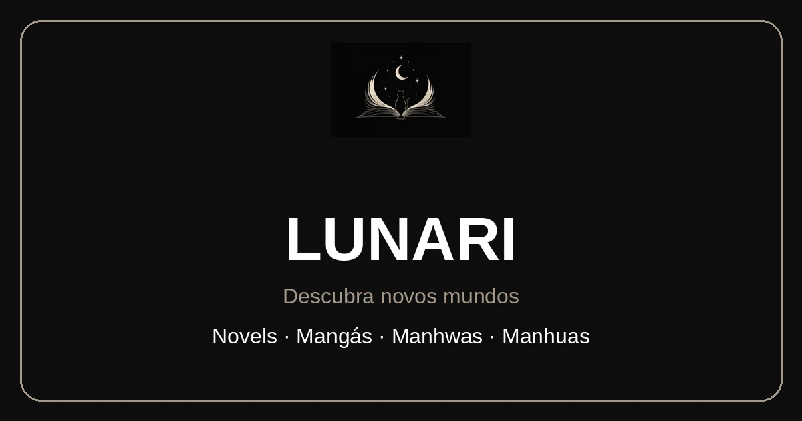

PROJETO PRINCIPAL / EM EVOLUÇÃO

Visual de apresentação da marca · não é uma captura da versão públicaLunari
Um espaço para descobrir histórias e acompanhar leituras de novels, mangás e manhwas. Meu principal projeto de desenvolvimento contínuo, unindo leitura e comunidade.
- Catálogo e leitores de texto e imagens.
- Biblioteca, perfis e comentários.
- Administração de obras e capítulos.
Recursos verificados no código local. A disponibilidade atual no site público não foi reconfirmada.
Desafios e tecnologias do projeto
Organizar diferentes formatos de leitura, conectar interfaces a uma API e respeitar permissões de usuários e administradores são desafios presentes no código.
HTML, CSS e JavaScript no frontend; Node.js e Express no backend. SQLite faz parte da versão local e não foi confirmado em produção.
O site público e o desenvolvimento local têm versões diferentes. A versão 4.0 segue local, ainda não publicada.
Acessar site público